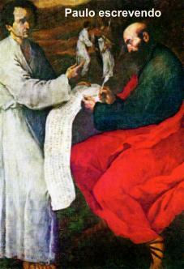
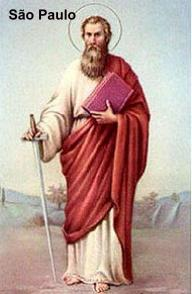

As Epístolas
escritas por Paulo de Tarso e o Livro dos Atos dos Apóstolos escrito por São
Lucas, traçam um retrato notável e surpreendente de São Paulo. É uma alma
apaixonada que se consagra sem limites a um ideal. DEUS é tudo em sua
vida e a ELE, serve com disposição e lealdade absoluta. Trabalhos, fadigas,
sofrimentos, privações, perigos de morte, nada lhe importa, desde que possa
cumprir a missão pela qual se sente responsável. Nenhum empecilho poderá
separá-lo do amor de DEUS e de CRISTO. A circunstância de seu chamado pelo
SENHOR lhe inspirou imensas e santas ambições: quando confessa sua solicitude
por todas as Igrejas; quando declara haver trabalhado mais que os outros; quando
piedosamente exorta os fieis a imitá-lo. Não por orgulho humano, mas em face de
uma legítima altivez de um humilde santo: ele se considera o último de todos,
por ter sido o perseguidor de CRISTO e por isso mesmo, atribui unicamente à graça
do CRIADOR as grandes coisas que aconteceram por seu intermédio. Encerrado nas
prisões, ele não se desesperava. Lembrava-se das palavras do SENHOR que lhe
antecipava sofrimentos e aflições que teria de passar, por causa do Nome de
DEUS. Por isso, elevava-se a um plano que lhe permitia consolidar as suas amplas
perspectivas da fé, alcançando uma profunda paz interior, ao mesmo tempo em que
era amparado pelo SANTO ESPÍRITO, no permanente combate contra todas as tribulações.
O Apóstolo nos faz compreender, que a felicidade não se encontra em nossas débeis mãos,
nem se mede pelos nossos méritos pessoais tão insignificantes. Antes, ela procede de um
ato de amor eterno e de uma escolha da graça Divina. Foi o CRIADOR que nos escolheu
e não fomos nós que O escolhemos. Escolheu cada um de nós desde a eternidade, e essa
escolha guardou-a por assim dizer como um segredo, no interior do Coração Divino,
até o dia em que nos chamou à existência e à luz da fé. Por esse ato eterno, o SENHOR
fez de Paulo o seu Grande Apóstolo, o Apóstolo dos Gentios, que soube agradecer ao
“chamado Divino”
com seu empenho e sua maior dedicação, da mesma forma que sempre soube responder
ao Amor de DEUS, com o seu modesto, mas sincero amor, até
o último instante de sua vida.
 A
pregação de Paulo é o verdadeiro “querigma”
apostólico, ou seja, ele proclama o CRISTO Crucificado e Ressuscitado
conforme as Sagradas Escrituras. Sua pregação , embora tenha falado aos gregos e judeus,
foi direcionada à conversão dos pagãos de todas as raças, na linha universalista inaugurada
em Antioquia. Ao longo de sua existência sentiu bem próxima a presença de JESUS:
primeiro, na ocorrência de sua conversão próxima a Damasco e depois, em
diversas ocasiões, quando foi favorecido com revelações e êxtases.
A
pregação de Paulo é o verdadeiro “querigma”
apostólico, ou seja, ele proclama o CRISTO Crucificado e Ressuscitado
conforme as Sagradas Escrituras. Sua pregação , embora tenha falado aos gregos e judeus,
foi direcionada à conversão dos pagãos de todas as raças, na linha universalista inaugurada
em Antioquia. Ao longo de sua existência sentiu bem próxima a presença de JESUS:
primeiro, na ocorrência de sua conversão próxima a Damasco e depois, em
diversas ocasiões, quando foi favorecido com revelações e êxtases.
Nas
pregações, ele desprezava os artifícios de linguagem, procurando ser simples,
direto e autêntico, não se preocupava com o poder da eloquência humana para
alcançar êxito na sua missão, mas entregava tudo ao poder da Palavra de fé,
em muitas ocasiões confirmada pelos sinais do ESPÍRITO SANTO.
Embora
as Epístolas de São Paulo não sejam Tratados de Teologia, mas resposta e soluções,
para situações concretas que ocorriam nas Comunidades Cristãs que ele fundou
e sabiamente soube orientar, serve para além delas, a todos os fieis de CRISTO.
São ensinamentos preciosos e luzes que esclarecem e fundamentam pontos da
doutrina cristã, sobretudo colocando em agradável evidencia, a TERCEIRA PESSOA
DA SANTÍSSIMA TRINDADE, o DIVINO ESPÍRITO SANTO. A teologia de Paulo
não foi elaborada encima de tratados de religião e nem construída somente sobre o
acontecimento de sua conversão. Mas se desenvolveu conforme uma linha continua,
sempre em evolução, sob a inspiração e o impulso do DIVINO PARÁCLITO, que
verdadeiramente dirigiu todo o seu apostolado.
A seguir apresentamos uma
minuciosa explicação sobre as Cartas do Apóstolo, na mesma ordem em que foram escritas,
as quais se encontram no NOVO TESTAMENTO. Recomendamos em primeira instância, a leitura
das Epístolas de São Paulo com disponibilidade, a fim de que os preciosos ensinamentos
sejam compreendidos e tenham a oportunidade de serem fixados na mente e no coração.
Assim, com o objetivo de ajudar o entendimento na leitura das Missivas, o APOSTOLADO DOS
SAGRADOS CORAÇÕES oferece uma edificante interpretação das mesmas, em cada link correspondente.
Clicando nele, terá o ensejo de conhecer um esclarecimento teológico sobre o conteúdo
daquela missiva escrita por São Paulo.
1)
Primeira Epístola aos Tessalonicenses
2)
Segunda Epístola aos Tessalonicenses
3)
Primeira Epístola aos Coríntios
4)
Segunda Epistola aos Coríntios
5)
Epístola aos Gálatas
6)
Epístola aos Romanos
7)
Epístola aos Filipenses
8)
Epístola aos Efésios
9)
Epístola aos Colossenses
10)
Primeira Epístola a Timóteo
11)
Segunda Epístola a Timóteo
12)
Epístola a Tito
13)
Epístola a Filemon
14)
Epístola aos Hebreus
ORAÇÃO (Pe. J. U. Leua)

DEUS Eterno e Todo Poderoso,
pela intercessão de São Paulo Apóstolo, possamos obter de Vós as bênçãos e as graças
que mais necessitamos para a nossa vida e sermos colaboradores na Evangelização
dos povos. Convertei nossos corações, à semelhança de São Paulo Apóstolo, para
que, fortalecidos e confiantes, possamos anunciar JESUS CRISTO Vivo e Ressuscitado.
Guardai a nossa fé e acolhei os nossos propósitos. Por NOSSO SENHOR JESUS CRISTO
que convosco vive e reina na unidade do ESPÍRITO SANTO. Amém.

 Próxima Página
Próxima Página
Página Anterior
Retorna ao Índice